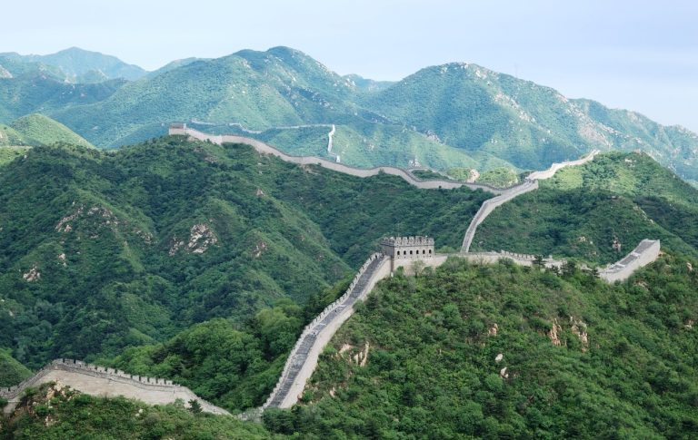
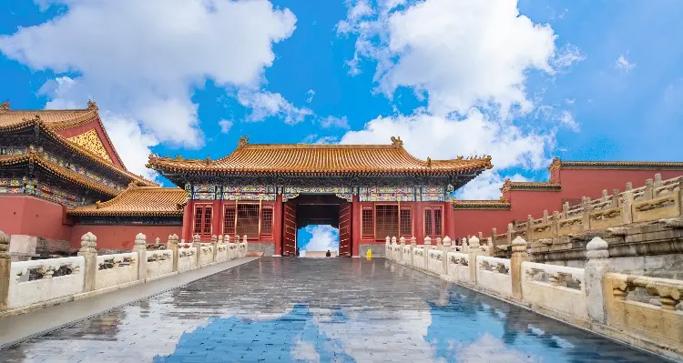

China, officially known as the People’s Republic of China, is a vast and diverse country in East Asia. It holds the title of the world’s second most populous nation after India (as of June 2023), with over 1.4 billion inhabitants. Geographically, it spans a broad landscape, ranging from the towering Himalayas in the southwest to the vast Gobi and Taklamakan deserts in the northwest. China is renowned for its rich history, ancient civilization, and contributions to art, science, and philosophy.

The Great Wall of China, an iconic symbol, stands as a testament to China’s historical might and engineering prowess. Built over centuries to protect against invasions from the north, it stretches thousands of kilometers and is a UNESCO World Heritage Site. Additionally, China boasts a rich cultural heritage, including Confucianism, Taoism, Buddhism, and traditional Chinese medicine. Chinese cuisine is celebrated worldwide for its diverse flavors and unique cooking styles. From spicy Sichuan dishes to delicate Cantonese dim sum, each region has its culinary specialties. China’s influence in global affairs continues to grow, making it a key player in the 21st century, shaping geopolitics, economy, and technology on an international scale.
The Forbidden City in Beijing — Imperial Palace for 24 Emperors
It was once a "palace" city where ordinary people were forbidden entry. An extravagant demonstration of ancient Chinese architecture, over 8,000 rooms with golden roofs are elegantly designed and painted in red and yellow. The Forbidden City was the imperial palace of the Ming and Qing Dynasties for 560 years till 1911. 24 emperors lived there. Listed as World Cultural Heritage, it also houses many Chinese cultural and historical relics and treasures. See 4-Day Beijing Private Tour with Visit to Forbidden City It is recognized as one of the five most important palaces in the world (with the Palace of Versailles in France, Buckingham Palace in the UK, the White House in the US, and the Kremlin in Russia). Read on How to Visit the Forbidden City — for Discerning Travelers
Curiosities
3. The Terracotta Army in Xi'an — 2,000-Year-Old Underground Army
The Terracotta Army has been laid underground for more than 2,000 years. However, in 1974, farmers digging a well uncovered one of the greatest archaeological sites in the world. In 1987 it became World Cultural Heritage.
It is significant because the hundreds of detailed life-size models represent the army that triumphed over all other Chinese armies in the Warring States Period (475—221 BC), and who were the decisive factor in forming a united China.
It raises interesting questions about why it was made, which await your consideration when you come face-to-face with soldiers of the past. See our 3-Day Essence of Xi'an Tour including Terracotta Warriors
| table | ||||
|---|---|---|---|---|
| Population | Area | Idiom | Coin | Capital |
| 1.4 billion people | 9,596,961 | Chinese | Renminbi | Beijing |
| aa | aa | aa | aa | aa |
Giant Pandas in Chengdu — China's "National Treasure"
The giant panda is not only deeply loved by the Chinese, but by many foreigners too, and not just children. Although there are many zoos in China and elsewhere, where you can see a giant panda, the best place to see them is Chengdu — the giant panda's "hometown". There are three places you can see pandas close up: Chengdu Panda Breeding and Research Center, Dujiangyan Panda Valley, and Bifengxia Panda Base. Chengdu Panda Center is in the north of the city and is more established. Dujiangyan and Bifengxia Panda Bases are 1-2 hours from Chengdu and you can see pandas in their natural habitat.
example of how to write in the local language below
網站有中、英文版本，也有繁、簡體版，可通過每頁左上角的連結隨時調整